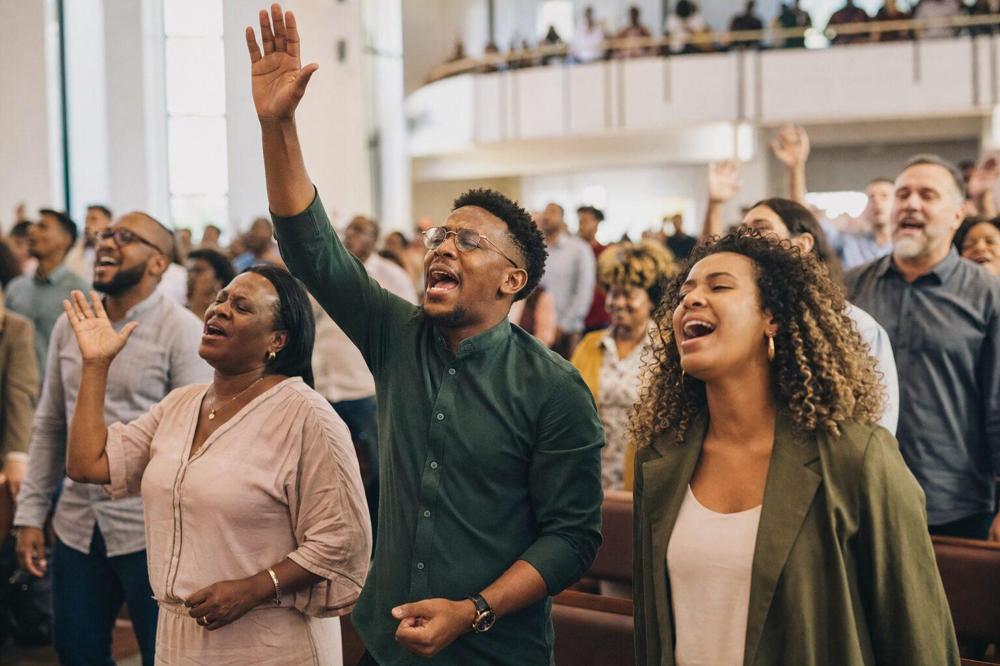

Daily Devotional
နေ့စဉ် ဝိညာဉ်ရေးရာ ဆင်ခြင်အောက်မေ့ခြင်း

Growing in Christ Every Day
နေ့စဉ် ခရစ်တော်၌ ကြီးထွားခြင်း
Read God's Word, reflect on His truth, and respond through prayer.
ဘုရားသခင်၏ နှုတ်ကပတ်တော်ကို ဖတ်ရှုပါ၊ ကိုယ်တော်၏ သမ္မာတရားကို ဆင်ခြင်ပါ၊ ဆုတောင်းခြင်းဖြင့် တုံ့ပြန်ပါ။
Today's Focus: Walking with God
ယနေ့ အာရုံစိုက်ရန်: ဘုရားသခင်နှင့်အတူ လျှောက်လှမ်းခြင်း
Today's Bible Verse: Psalm 119:105
ယနေ့ ကျမ်းပိုဒ်: ဆာလံ ၁၁၉:၁၀၅
"Your word is a lamp to my feet and a light to my path."
နှုတ်ကပတ်တော်သည် အကျွန်ုပ်ခြေရှေ့မှာ မီးခွက်ဖြစ်၍၊ အကျွန်ုပ်လမ်းခရီးကို လင်းစေပါ၏။
Reflection
ဆင်ခြင်အောက်မေ့ခြင်း
God's Word guides our steps and helps us walk in His truth every day.
Today's Application
ယနေ့ လက်တွေ့ကျင့်သုံးရန်
Take time to read God's Word and follow His guidance in your decisions today.
Today's Prayer
ယနေ့ ဆုတောင်းချက်
Lord, guide my steps through Your Word. Help me follow Your truth and walk with You today. Amen.
အို သခင်၊ ကိုယ်တော်၏ နှုတ်ကပတ်တော်အားဖြင့် ကျွန်ုပ်၏ ခြေလှမ်းများကို လမ်းပြတော်မူပါ။ ကိုယ်တော်၏ သမ္မာတရားကို လိုက်လျှောက်၍ ယနေ့ ကိုယ်တော်နှင့်အတူ လျှောက်လှမ်းနိုင်ရန် ကူညီတော်မူပါ။ အာမင်။
Bible Teaching
ကျမ်းစာသင်ကြားခြင်း
Learn God's Word and grow as a faithful disciple of Jesus Christ.
ဘုရားသခင်၏ နှုတ်ကပတ်တော်ကို သင်ယူပြီး ယေရှုခရစ်တော်၏ သစ္စာရှိသော တပည့်တော်အဖြစ် ကြီးထွားကြပါစို့။
Our Ministry Community
ကျွန်ုပ်တို့၏ အသင်းတော်မိသားစု

Growing together in Christ through fellowship, worship, and discipleship.
ခရစ်တော်၌ မိတ်သဟာယဖွဲ့ခြင်း၊ ဝတ်ပြုကိုးကွယ်ခြင်းနှင့် တပည့်တော်ဖြစ်ခြင်းတို့မှတစ်ဆင့် အတူတကွ ကြီးထွားကြပါစို့။
Contact Us
ဆက်သွယ်ရန်
Connect with New Thing Makers Ministry for Bible study and discipleship.
ကျမ်းစာသင်ယူခြင်းနှင့် တပည့်တော်ဖြစ်ခြင်းအတွက် New Thing Makers Ministry သို့ ဆက်သွယ်နိုင်ပါသည်။